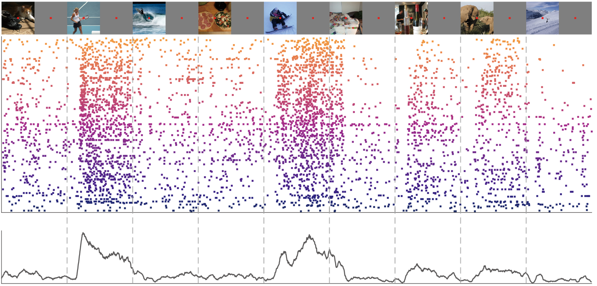

Triple-N Dataset Documentation
Triple-N dataset: large-scale fMRI-guided dense recordings of nonhuman primate neural responses to natural scenes

This document describes the data structure and usage of Triple-N dataset, which contains extensive spiking activity recorded across the visual cortex in response to 1,000 natural scene images.
For a quick start, see Quick start and Demo Code. We need your feedback — please feel free to raise an issue here or email us with any suggestions or points needing clarification.
Contact:
-
Yipeng Li 李依朋
moonl@pku.edu.cn -
Corresponding: Pinglei Bao 鲍平磊
pbao@pku.edu.cn
News
2026/06/10 - The triple-N paper is now published.
2026/04/14 - We’ve finally released the triple-N dataset! Hope you enjoy using it!
2026/04/08 - We’ve finally clicked the “Submit” button on the data platform after file sturcture revision - fingers crossed the review process won’t take too long.
2026/04/07 - Update file system and documentation structure.
2026/01/08 - Add temporally links to all data! Update other necessary Docs.
2025/12/29 - Update Docs.
2025/11/10 - We finally decided to store the data at Science Data Bank!
2025/10/29 – Initial creation of NNN document. Much of the content has been copied from previous materials.
2025/05/06 - Triple-N preprint online!